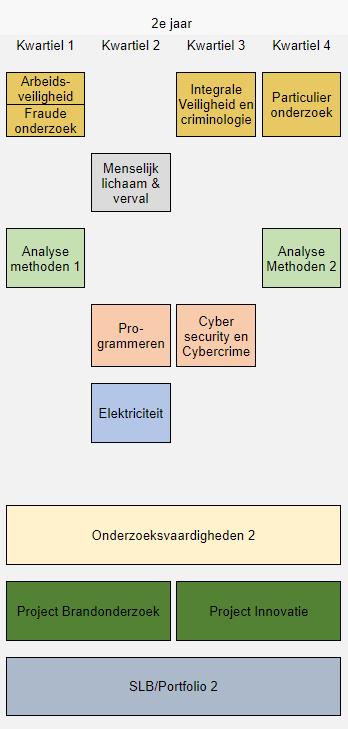

Aangezien de docenten het een goed idee vonden om niet alles op te nemen moeten de leerlingen dat nu maar zelf gaan doen :( Vandaar deze website, om leerlingen te helpen met dit jaar te halen.

De enige vakken die op dit moment worden opgenomen zijn de vakken die bestaan uit één kwartiel.Mocht je graag willen dat de andere overige vakken ook woren opgenomen laat het mij dan snel weten, dan kan ik kijken wat ik er aan kan doen!